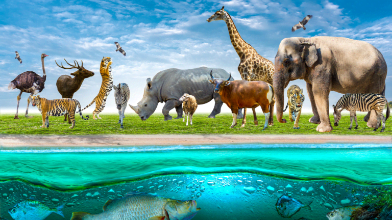

<!DOCTYPE html>
<html lang="en">
</html>
<head>
    <meta charset="UTF-8">
    <meta name="viewport" content="width=device-width, initial-scale=1.0">
    <title>Save Our Tigers!</title>
    <link rel="stylesheet" href="style.css">
</head>
<body>
    <h1>Save Our Tigers From Vanishing</h1>

    <nav class="navbar">
        <ul>
            <li><a href="index.html">Home</a></li>
            <li><a href="Why Save Tigers?.html">Why Save Tigers?</a></li>
            <li><a href="General Wildlife.html">General Wildlife</a></li>
            <li><a href="Contact Us.html">Contact Us</a></li>
        </ul>
    </nav>

    <h2>Why is Our General Wildlife so Important?</h2>
    <p>Wildlife is essential to maintaining ecological balance and supporting the health of the planet. Every species plays a specific role within its ecosystem, from predators that control population sizes to pollinators that ensure plant reproduction. This interconnected web of life contributes to clean air, fertile soils, and a stable climate. The disappearance of even a single species can disrupt this delicate balance, leading to unforeseen consequences for the environment and humanity.</p>

    <p>Moreover, wildlife holds significant cultural, economic, and scientific value. Many indigenous cultures and communities draw inspiration, identity, and livelihood from the natural world. Economically, wildlife-based tourism supports countless jobs and contributes billions to global GDP annually. Scientifically, studying animals and their habitats helps us understand our own biology, develop new medicines, and find solutions to pressing environmental challenges.</p>
        
    <p>Preserving wildlife is not only about ethical responsibility but also about securing the future of life on Earth. Biodiversity strengthens resilience against climate change, diseases, and natural disasters. Protecting wildlife ensures that future generations can continue to benefit from the essential services ecosystems provide, from clean water to pollination. As stewards of this planet, it is our duty to safeguard wildlife for a sustainable and harmonious existence.</p>
            
</body>
<html>